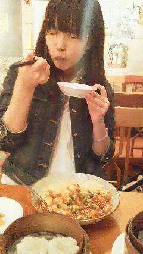

| 2012/04 26 Thu | ひめたん(* ゝω・*)ノ その137 |
会社に行きました∩^ω^∩☆
あのねー、ひめたん最近会社に行っても長居することなかったからね
ようやくお手紙やプレゼント受け取りました!
ひめたんはみなさんに支えられてるんだなって
心がほっこりしました(*^^*)
乃木どこ放送直後の、頑張ろう!って決心とか
生誕祭やってもらった時の感動とか
いろいろよみがえってきたきたきたー♪♪♪
最近は
ブログとかお手紙とかでしかみなさんに会えないから
今日は久々にいっぱいお話した感
 お手紙と
わら
お手紙と
わら
お手紙と
わら
あっそれから
ちょいと前のブログで
万理華特集
☆
万理華も読んでくれましたらしいのよー♪
そしたらめちゃ喜んでぎゅーってしてくれました!
まーりか(o>ω<o)
そんでね、万理華特集・
ろってぃ
特集書いてて思ったんだけど
やっぱり相手のことをよくわかってないと書けない!
表側の薄っぺらい部分だけじゃなくて、本当に相手のこと理解してないと
その人のことうまく伝えることなんて無理なのよ。
相手のこと知ってれば知ってるだけ深ーい紹介ができるんだよね。
みなさん知らないかもだけど、実はこんなに素敵な子なんだよ!って♪
ってのを考えた時に気付いた。
みゅみゅ
(若月佑美chan)すげーな(・ω・)

 俺の誕生日4月25日だから若干遠いから仲間は入れずだわp('⌒`q)
俺の誕生日4月25日だから若干遠いから仲間は入れずだわp('⌒`q)
でも、ひめたんはお祝いしてくれるはずww
おめでとうございます!
これまたひめたんと近いやんけー♪
笑顔の写メは「次に期待して」。
そう。知る人ぞ知る
かずみん
(高山一実chan)のあの解答です(^^)!
とにかくお誕生日おめでとうございますいえあ☆
 大阪で食べておきたいものがあれば教えてください。
大阪で食べておきたいものがあれば教えてください。
たこなしたこやき!
そういや前にお邪魔した時にたこやき食べてなかった(・ω・)
握手会に来た人って、何人くらい覚えてますか?
全員数えてたら日が昇る!
てか数えてるうちに多分寝る。寝てまう('・・`)♪
握手会っていろんな県から来てる人いると思うけど
びっくりしたのはどこから来てる人だった?
遠くから来られてる人いた?海外とか?
海外からお越しの方にはまだあったことないなあ
ひめたんは北海道や沖縄から来てたらびっくりするし
会場の超近場から来ててもこれまたびっくりするし
結局どこから来てもびっくりする!
乃木坂はこんなとこにまで浸透してるのかーとでもいいましょうか(^ω^)
俺の名前、握手会で言えば分かる?
わかる自信あるよー(ω)☆
言ってみるしかっ
握手会のときにフルネームで呼んでいい?
呼んで呼んでっ♪♪
なかもとーひーめかー!
乃木ジャーじゃなくてアディジャーで握手行ってもいい?(笑)
あ、あでぃじゃ。わら
乃木じゃでなくあでぃじゃ。
一応許可はするけれどもー
握手会でコメントしてる名前言ったら覚えてくれる??
何回ひめたんのとこ行ったら覚えてくれるー??
ファンの顔とかって覚えてるもんなの?
覚えてるよ結構☆
ただし記憶を引っ張り出すのに時間がかかることあるから
誰か中元さんの頭をお掃除してくださいなー♪
大阪の握手会では名古屋の分まで俺を楽しませてくれる?
よしっ約束しましょう!
大阪個別もご欠席ってこたあないよね?
ないないないよ行くよー!
楽しみすぎて最近全然寝れなーい(o>ω<o)
 ひめたんのとっておきダイエット方法あったら教えて?
ひめたんのとっておきダイエット方法あったら教えて?
一時期、痩せたねーっていろんな人にほめてもらったことがあったんだけど
その時はプール通ってましたかな(*^^*)
やっぱりプールは健康的なダイエット方法だと思うよ〜♪
あたしも行かねばーっ!
脱甘い物してるひめたんブログを読みながら
饅頭を食べ、カフェオレを飲んでいます
そんなファンをどう思いますか?www
ひめたんの代わりに美味しいものを満喫して、幸せになってくれてありがとう。
...てことにしておいてください('・ω・`)
(*'・ω・*)ひめたん
コメント(89)
2012/04/26 01:00